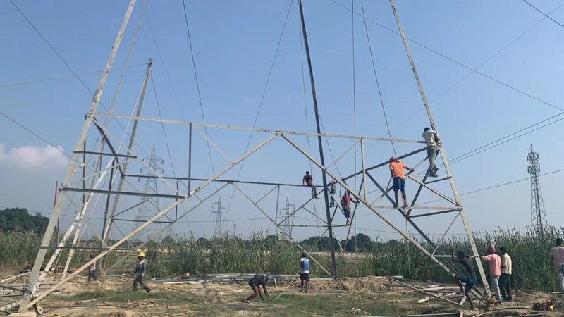
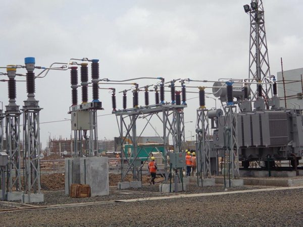
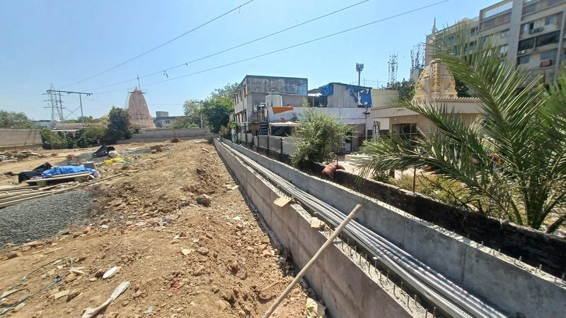
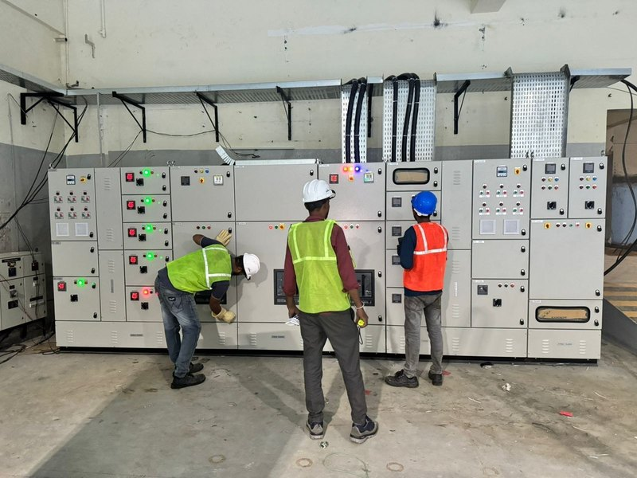
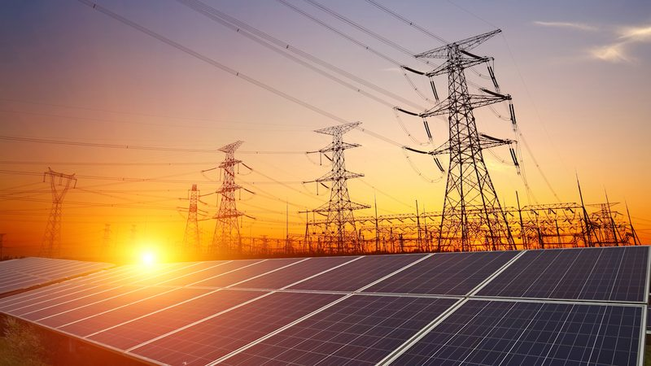

Energy audit & efficiency solutions for municipalities & government.
We assess where electrical energy is being lost or wasted — in lighting, motors, transformers and feeders — and, where asked, execute the upgrade work the audit identifies, for municipal corporations, government bodies and industry.
From audit finding to executed fix.
- Preliminary & detailed energy audits — lighting, motor/pump and transformer load assessment.
- Feeder & AT&C loss analysis — technical and commercial loss identification on distribution feeders.
- Metering accuracy review — checking metering infrastructure against actual consumption.
- Efficiency upgrade recommendations — lighting retrofit, transformer replacement, feeder segregation.
- Implementation support — executing the upgrades an audit identifies, not just reporting on them.
- Reporting aligned to BEE & RDSS objectives — documentation a municipality or utility can act on.
Built for the public and industrial sector alike
Municipal corporations
Street lighting, water pumping and public building loads reviewed for loss and inefficiency.
Government & PSU campuses
Office and campus electrical infrastructure audited against actual usage and load.
Industrial & commercial sites
Facility-level audits that feed directly into our industrial electrification and smart energy management work.
The rest of the network we build.

HT Transmission Line Construction
Route survey, tower and pole erection and conductor stringing for 11kV to 66kV overhead lines.
Explore capability →

66kV Substations & Feeder Bays
Bus systems, switchgear bays, protection panels and control rooms from 11kV to 66kV.
Explore capability →

Street Lighting & Public Infrastructure
LED street lighting, pole erection, feeder pillars and smart lighting controls.
Explore capability →

Industrial Electrification & Smart Energy Management
Internal HT/LT distribution, power factor correction and energy monitoring that cut costs.
Explore capability →

Solar & Renewable Energy Integration
Rooftop and ground-mount solar EPC, grid interconnection and hybrid-ready systems.
Explore capability →
Common questions on this capability
What does an electrical energy audit for a municipality actually involve?
It covers a review of lighting, motor and pump loads, transformer and feeder losses, and metering accuracy, following the preliminary and detailed audit approach set out under the Bureau of Energy Efficiency framework, with a report of the losses found and the efficiency measures recommended.
How does this connect to schemes like RDSS?
The Revamped Distribution Sector Scheme is focused on reducing AT&C losses and improving metering and feeder accountability for distribution utilities. Our energy audit and infrastructure upgrade work is planned to support the same loss-reduction and smart-metering objectives municipal and utility clients are working toward under RDSS.
Do you only audit, or also implement the recommended fixes?
Both. Where a client wants the audit findings acted on, we can also execute the infrastructure work it identifies, such as feeder segregation, transformer replacement, lighting retrofit or metering upgrades, under the same project management as the audit.
Need an energy audit or a loss-reduction programme?
Tell us the site type and scale, and we'll come back with an audit scope and cost.